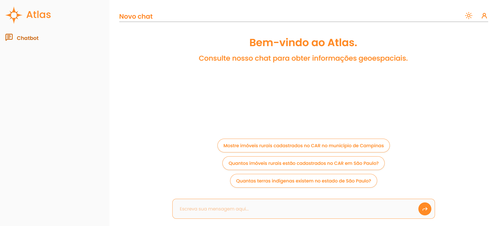
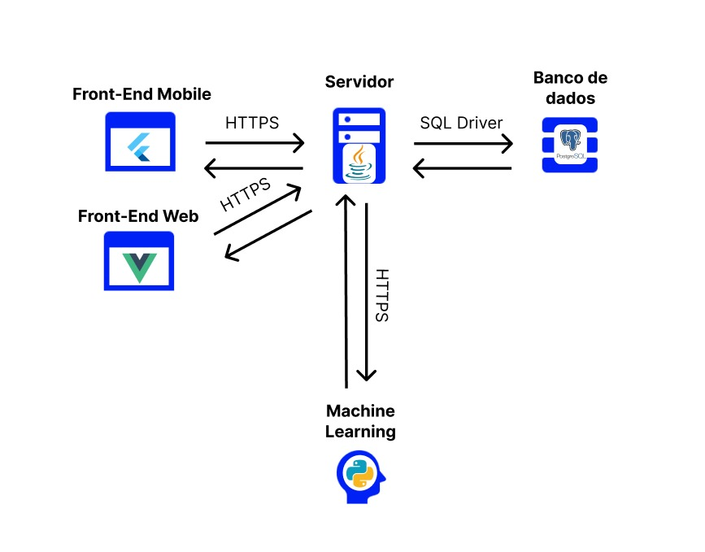
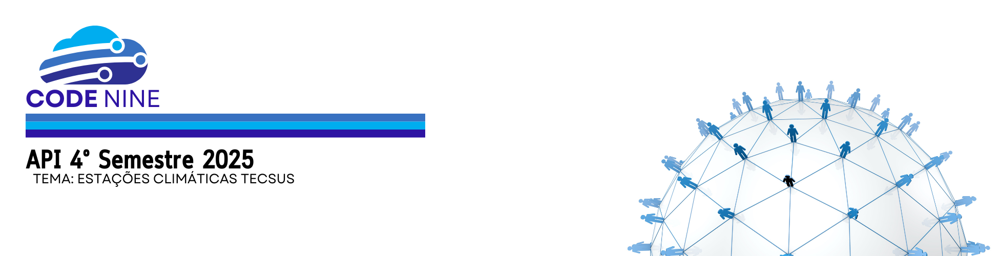
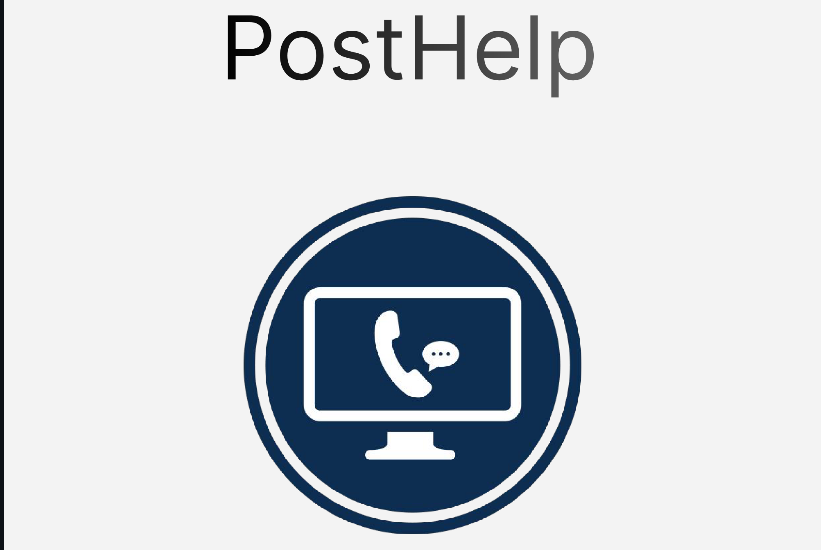
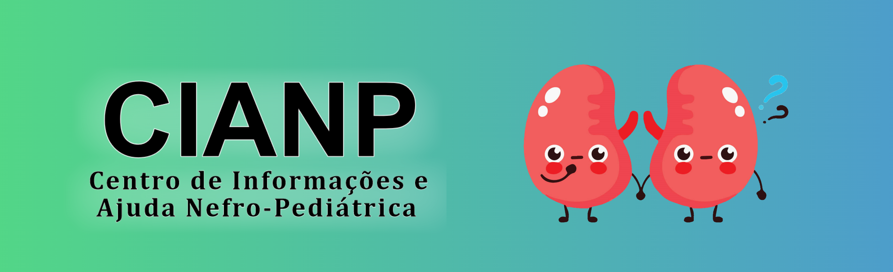

Projetos de API da FATEC SJC

2026.1 — Sistema de Análises Ambientais (Visiona)
6º Semestre | Desenvolvedor Full Stack
Soluções de Inteligência Artificial para NLP e análises avançadas.
Minhas Contribuições:
- Desenvolvimento de fallbacks de resposta e testes.
- Padronização de leitura de coordenadas no sistema.
- Integração de mapas e filtros de resultados.

2025.2 — Gestão Administrativa e Almoxarifado
5º Semestre | Scrum Master
Digitalização da gestão de almoxarifado militar, com rastreamento via QR Code.
Minhas Contribuições:
- Facilitação de cerimônias ágeis e remoção de impedimentos técnicos da equipe.
- Alinhamento de backlog com Product Owner.

2025.1 — Monitoramento Meteorológico (Tecsus)
4º Semestre | Desenvolvedor Full Stack
Sistema IoT para coleta e visualização de dados ambientais e sensores de alta frequêcia em tempo real.
Minhas Contribuições:
- Arquitetura de API com FastAPI para ingestão dos dados.
- Modelagem de banco NoSQL (MongoDB).
2024.2 — Portal da Transparência (FAPG)
3º Semestre | Desenvolvedor Full Stack
Modernização do portal de auditoria institucional e de projetos de bolsistas.
Minhas Contribuições:
- Desenvolvimento de Endpoints de pesquisa avançada com Java (Spring Boot) para o backend.
- Estruturação e scripts de ETL de migração do BD legado.

2024.1 — Sistema de Suporte Técnico (HelpDesk)
2º Semestre | Desenvolvedor Backend
Service Desk corporativo com abertura de chamados, suporte automatizado e chat em tempo real.
Minhas Contribuições:
- Criação de APIs com Node.js e modelagem relacional de tickets (MySQL).

2023.2 — Plataforma Criança Renal
1º Semestre | UI Developer
Sistema web unificado e voltado ao apoio, acompanhamento e triagem à gestão clínica (formulários interativos).
Minhas Contribuições:
- Estruturação das páginas interativas da interface inicial e componentização em HTML semântico e CSS nativo.
Projetos Profissionais
Ainda não possuo projetos profissionais publicados. Em breve trarei novidades!
Projetos Pessoais & Hobbies
Hobbies
No meu tempo livre, gosto muito de:
- 🎵 Tocar violão
- ✈️ Viajar e conhecer novos lugares
- 🎬 Assistir filmes